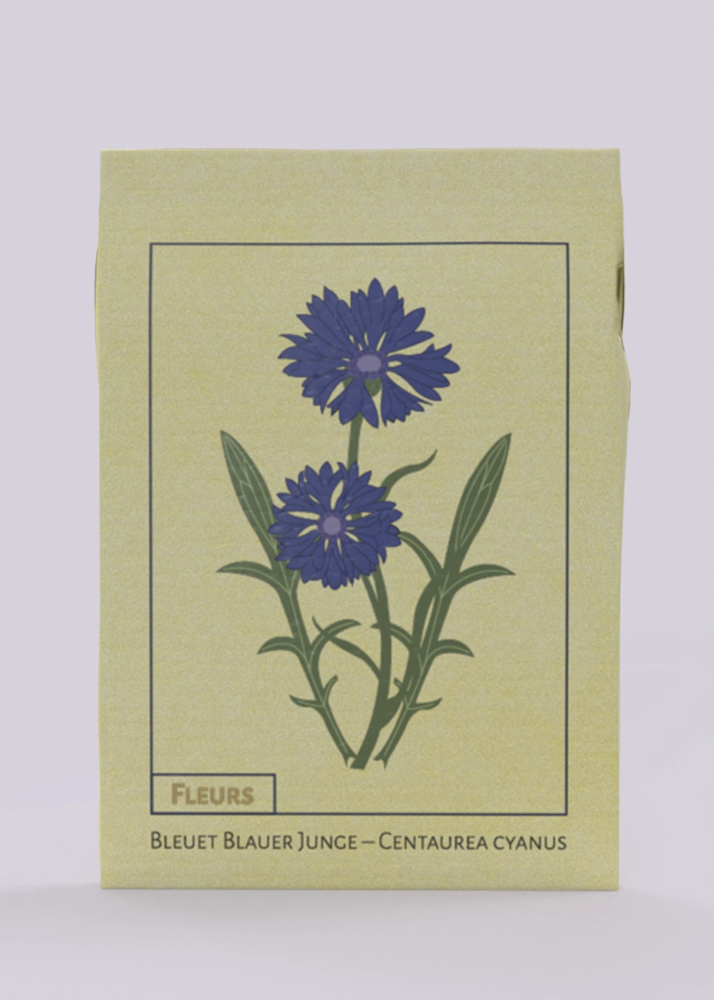
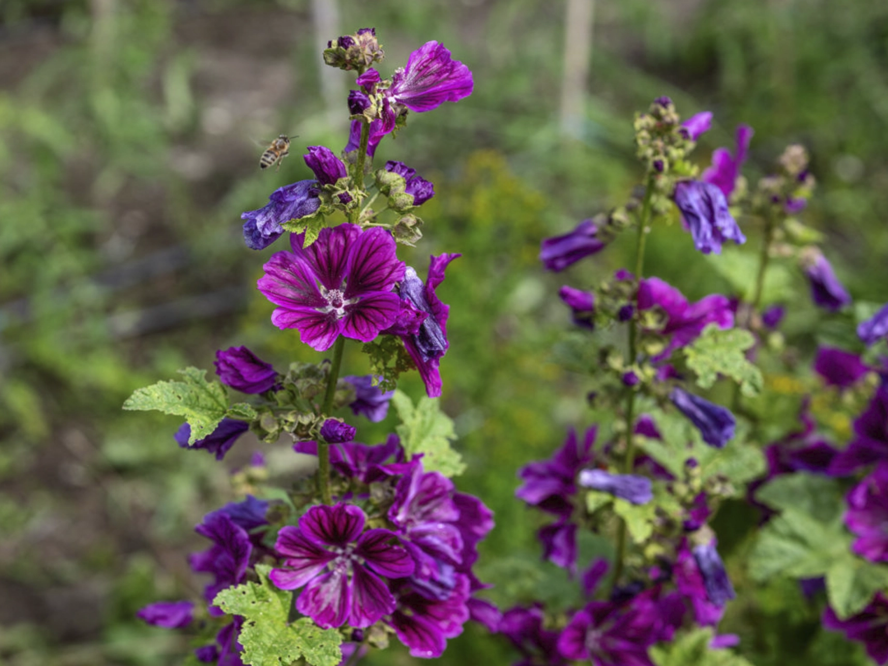

Nos semences
Potimarron orange en forme de toupie au caractéristique goût de châtaigne.
Le plus ancien potimarron débarqué sur le continent.


Cette variété traditionnelle italienne de haricots à écosser aux gousses zébrées de rouge donne une belle récolte de graines de plusieur couleurs.


Les délicats pétales de cette magnifique fleur des champs s'emploient pour embellir vos salades d'été et, séchés, dans des mélanges de tisanes.
 Découvrez nos trésors de biodiversité sur le shop!
Shop